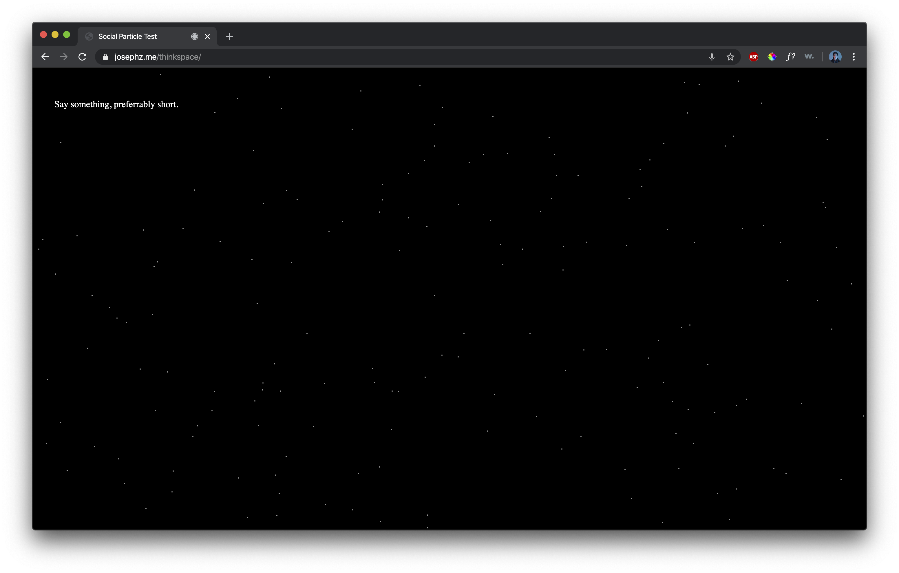
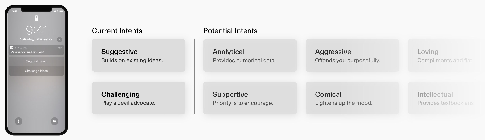
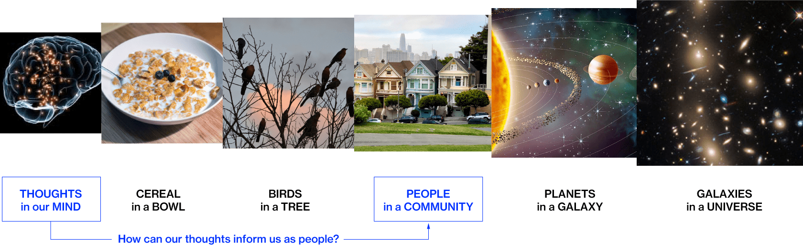

<!DOCTYPE html>
<html lang = "en">
    <head>
                <!-- Global site tag (gtag.js) - Google Analytics -->
                <script async src="https://www.googletagmanager.com/gtag/js?id=UA-148807463-1"></script>
                <script>
                window.dataLayer = window.dataLayer || [];
                function gtag(){dataLayer.push(arguments);}
                gtag('js', new Date());
        
                gtag('config', 'UA-148807463-1');
                </script>
        <meta charset="UTF-8">
        <meta name = "viewport" content = "width=device-width, initial-scale=1.0">
        <meta http-equiv="X-UA-Compatible" content = "ie=edge">
        <title>Social Thought</title>
        <link rel="icon" href="images/herb.png">
        <link rel = "stylesheet" href = "main.css">
        <link rel="stylesheet" href="https://use.typekit.net/srk5tly.css">
        <script src="script/java.js"></script>
    </head>
    <body>
        <script>
            fadeInPage();
        </script>
                
        <div id="myNav" class="overlay">
            <!-- Button to close the overlay navigation -->
            <div class='nav-container wrapper'>
                <div class='navbar'>
                    <div class='links'>
                            <a href="javascript:void(0)" onclick="closeNav()">Close</a>
                    </div>
                </div>
            </div>

            <!-- Overlay content -->
            <div class="overlay-content wrapper links">
                <p>&mdash;</p>
                <a href="about.html">About</a>
                <a href="photo.html">Photo</a>
            </div>
        </div>

        <div class='nav-container '>
            <div class="navbar wrapper">
                <div class="logo"> <a href="index.html">Joseph</a>

                        <!----<span id="typed-strings"></span>
                        <span id='typed'></span>-->
                </div>
 
                <input type='checkbox' id="navmenu">
                <div class="links-container">
                    <div class="links">
                            <a href="photo.html">Photo</a>
                            <a href="about.html">About</a>
                        </div>
                </div>
                <div for="navmenu" class='hamburger-container'>
                        <p onclick="openNav()" class='links hamburger' href=''>Menu</p>
                </div>
            </div> 
        </div>

        <!------BEGIN CONTENT----->
                
                <div class='white-container'>
                    <div class='text-wrap'>
                        <div class = 'left'><h3>Thinkspace</h3></div>
                        <div class='right'>
                            <p>Rich, engaging conversation is a hallmark of ameaningful human-to-human experience. However, factors such as relational closeness, social formalities, and hesitance often hinder individuals from going beyond surface-level conversation.<br><br>Thinkspace is a project that aims to reinvision the role of conversational agents in discussion-based contexts. <em>Documentation is still in progress.</em></p><br><br>

                            <div class = 'row'>
                                <div class = 'column'>
                                    <h5>Skills</h5>
                                    <p>p5.js</p>
                                    <p>Interaction Design</p>
                                    <p>Adobe Aftereffects</p>
                                </div>
                                <div class = 'column' style ='text-align:left'>
                                    <h5>Timeframe</h5>
                                    <p>7 Weeks</p>
                                    <p>(Spring 2020)</p>
                                </div>
                                <div class = 'column' style ='text-align:left'>
                                    <h5>Collaborators</h5>
                                    <p>None</p>
                                </div>
                            </div>

                        </div>
                    </div>
                    <div class = 'spacer'></div>
                    <div class='embed-container wrapper'>
                        <div style="padding:56.25% 0 0 0;position:relative;">
                            <iframe src="https://www.youtube.com/embed/qp47JaoOobg" style="position:absolute;top:0;left:0;width:100%;height:100%;" frameborder="0" allow="autoplay; fullscreen" allowfullscreen></iframe>
                        </div>
                    </div>
                </div>

                <div class = 'gray-container'>
                    <div class = 'text-wrap'>
                        <h4 class = 'left'>Live Prototype</h4>
                        <div class = 'right'>
                            <p>I prototyped the particle interaction with p5.js and mapped the text output to voice with the <a href ='https://github.com/IDMNYU/p5.js-speech'>p5.js speech library.</a> Below is a mid-process working prototype of how the particle system reacts to one's vocal words. A massive thanks to <a target = 'blank' href = 'https://www.youtube.com/user/shiffman'>Daniel Shiffman</a> for not only his seemingly unending list of video tutorials but also for making learning javascript enjoyable.</p>
                            <div class = 'spacer'></div>
                            <a target = 'blank' href = 'https://www.josephz.me/thinkspace'></a>
                            <div class = 'caption'>Click to view live prototype</div>
                        </div>
                    </div>
                </div>
                <div class = 'white-container'>
                    <div class = 'text-wrap'>
                        <h4 class = 'left'>Input Methods</h4>
                        <div class = 'right'>
                            <p>The goal of Thinkspace is to enhance human-to-human conversation, not human-to-computer conversation. Because of that, <em>Thinkspace is designed so that no verbal exchange occurs between person & computer.</em></p><br><br>
                            <h5>System Wake & Sleep</h5>
                            <p><em>Person invocates through voice.</em> Thinkspace is about conversation, therefore the first point of interaction should reflect that.</p><br><br>
                            <h5>Role Selection</h5>
                            <p><em>Person chooses through mobile interface.</em> It’s illogical for the system to project the various options given limited wall space.</p><br><br>
                            <h5>How the system provides information</h5>
                            <p><em>Only visual and audial cues, no spoken dialogue.</em> The goal is to highlight the human-to-human conversation, therefore the assistant never replies auditorily in words.</p>
                        </div>
                    </div>
                </div>
                <div class = 'gray-container'>
                    <div class = 'text-wrap'>
                        <h4 class = 'left'>Modular "Intents"</h4>
                        <div class = 'right'>
                            <p>Every conversation has a different context and intention of initiation. Thinkspace embraces that, giving conversationalists the ability to dictate the voice assistant's role prior to beginning the actual conversation. </p>
                        </div>
                    </div>
                    <div class = 'spacer'></div>
                    
                </div>
                <div class = 'white-container'>
                    <div class = 'text-wrap'>
                        <h4 class = 'left'>Thought Metaphor</h4>
                        <div class = 'right'>
                            <p>Upon doing research on memory, thought, and the way ideas are developed, I came across this <a target = 'blank' href='https://www.pnas.org/content/115/5/1087'>research article</a> from the National Academy of Sciences which claims that highly creative people differ from the "average joe" because of how their three primary brain regions coactivate together, rather than individually.<br><br>
                            I couldn't help but wonder how the conceptual model of the human mind might be able to influence people's  tendency to form cliques. <em>How can the grouping and regrouping of our thoughts act as analogy for the way we should expand beyond our zones of social comfort?</em></p>
                            <div class = 'spacer'></div>
                            
                            <div class = 'spacer'></div>
                            <div class='embed-container' style = 'width: 100%;'>
                                <div style="padding:56.25% 0 0 0;position:relative;">
                                    <iframe src="https://player.vimeo.com/video/392121599" style="position:absolute;top:0;left:0;width:100%;height:100%;" frameborder="0" allow="autoplay; fullscreen" allowfullscreen></iframe>
                                </div>
                                <script src="https://player.vimeo.com/api/player.js"></script>
                            </div>
                            <div class = 'caption'>Grouping & regrouping of thoughts</div>
                        </div>
                    </div>
                </div>
                <div class = 'gray-container'>
                    <div class = 'text-wrap'>
                        <h4>Progress Videos</h4>
                        <div class = 'right'>
                            <p>Though this project was quite conceptually driven, a large part of my process went into exploring the code-based relationship between particle engines, input systems, and eventually text translation. Below are a series of progress videos that document my javascript explorations throughout this project. 
                            <div class = 'spacer'></div>
                            <div class='embed-container' style = 'width: 100%;'>
                                <div style="padding:56.25% 0 0 0;position:relative;">
                                    <iframe src="https://player.vimeo.com/video/390746526" style="position:absolute;top:0;left:0;width:100%;height:100%;" frameborder="0" allow="autoplay; fullscreen" allowfullscreen></iframe>
                                </div>
                                <script src="https://player.vimeo.com/api/player.js"></script>
                            </div>
                            <div class = 'caption'>Iteration 1 — Gravitational particles</div>
                            <div class='embed-container' style = 'width: 100%;'>
                                <div style="padding:56.25% 0 0 0;position:relative;">
                                    <iframe src="https://player.vimeo.com/video/390746564" style="position:absolute;top:0;left:0;width:100%;height:100%;" frameborder="0" allow="autoplay; fullscreen" allowfullscreen></iframe>
                                </div>
                                <script src="https://player.vimeo.com/api/player.js"></script>
                            </div>
                            <div class = 'caption'>Iteration 2 — Particle-to-text</div>
                            <div class='embed-container' style = 'width: 100%;'>
                                <div style="padding:56.25% 0 0 0;position:relative;">
                                    <iframe src="https://player.vimeo.com/video/391631851" style="position:absolute;top:0;left:0;width:100%;height:100%;" frameborder="0" allow="autoplay; fullscreen" allowfullscreen></iframe>
                                </div>
                                <script src="https://player.vimeo.com/api/player.js"></script>
                            </div>
                            <div class = 'caption'>Iteration 3 — Voice-to-text</div>
                            <div class='embed-container' style = 'width: 100%;'>
                                <div style="padding:56.25% 0 0 0;position:relative;">
                                    <iframe src="https://player.vimeo.com/video/396996811" style="position:absolute;top:0;left:0;width:100%;height:100%;" frameborder="0" allow="autoplay; fullscreen" allowfullscreen></iframe>
                                </div>
                                <script src="https://player.vimeo.com/api/player.js"></script>
                            </div>
                            <div class = 'caption'>Iteration 4 — Voice-to-Image (eventually scrapped idea)</div>
                        </div>
                    </div>
                    <div class = 'white-container'>
                        <div class = 'text-wrap'>
                            <h4>Conclusion</h4>
                            <div class = 'right'>
                                <p>Conceptualizing Thinkspace was delightful because it stemmed from a genuine interest in computation, multimodal forms of interaction, and the application of metaphors to design. Working on this project gave me the opportunity to challenge the conventional roles of voice assistants and what proactivity in terms of listening and feedback.</p>
                            </div>
                        </div>
                    </div>
                    <div class = 'spacer'></div>
                    <div class="footer-container-main wrapper">
                        <div class="row">
                            <div class ='column'><a target = 'blank' href = 'https://www.linkedin.com/in/josephzme/'>LinkedIn↘&#xFE0E</a></div>
                            <div class ='column'><a target = 'blank' href = 'https://www.instagram.com/josephhhz/'>Instagram↘&#xFE0E</a></div>
                            <div class ='column'><a target = 'blank' href = 'https://drive.google.com/file/d/1cotl1bin2rTki2ijwEX8kceP8qN4X2HZ/view'>Resume↘&#xFE0E</a></div>
                        </div>
                    </div>
                </div>


        <script src="https://ajax.googleapis.com/ajax/libs/jquery/3.4.1/jquery.min.js"></script>
        <script src="script/java.js"></script>

    </body>
</html>